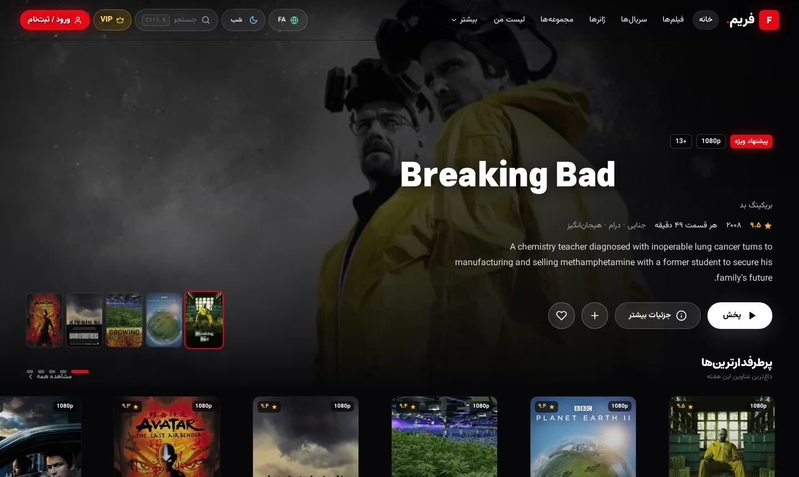
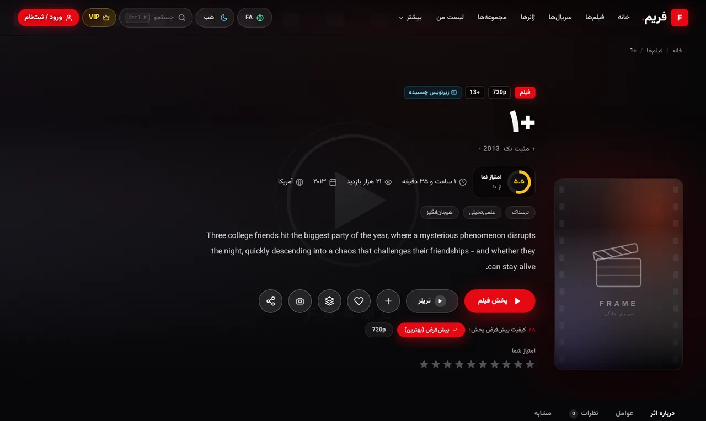
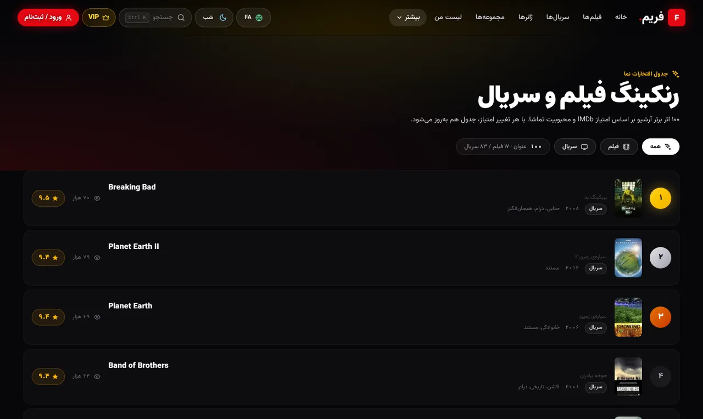
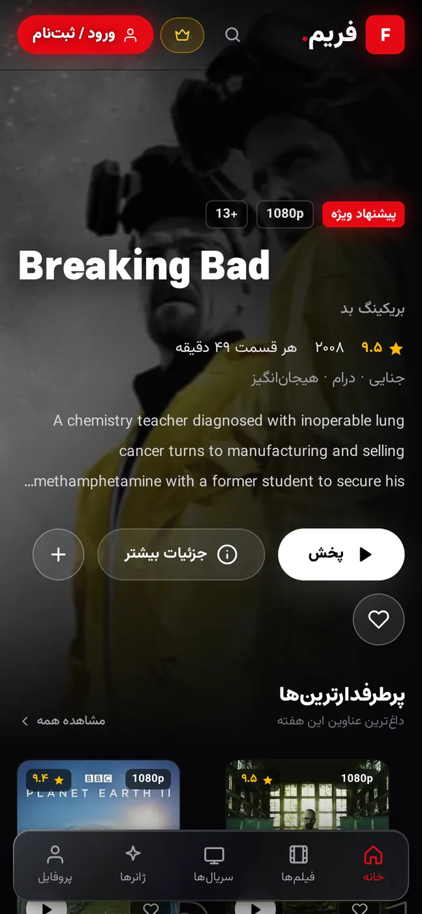
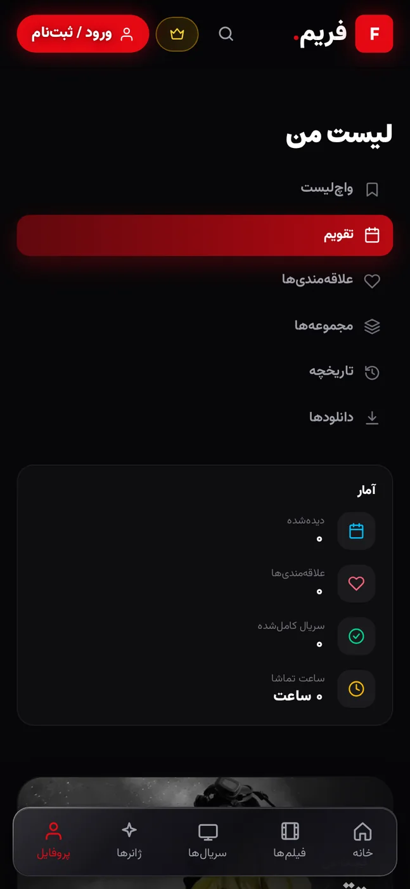
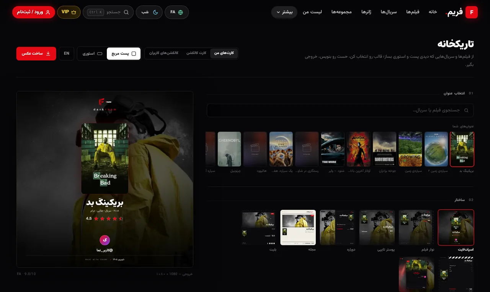

کتابخانهی بزرگ
بیش از ۱۸ هزار فیلم و ۳٬۸۰۰ سریال؛ جستجوی زنده، فیلتر ژانر و سال و رنکبندیهای بهروز بر اساس امتیاز IMDb.
✦ سینمای خانگی · رایگان · بدون تبلیغ · کاملاً فارسی
هزاران فیلم و سریال با کیفیت تا 4K، دوبله و زیرنویس فارسی — روی ویندوز، مک، لینوکس و اندروید. لیست تماشا، کلکسیونسازی، تاریکخانه و همگامسازی ابری؛ همه در یک برنامهی زیبا.
آخرین نسخه: v0.56.0 · ویندوز · مک · لینوکس · اندروید ۷+

امکانات
فریم فقط «پخشکننده» نیست؛ یک تجربهی کامل تماشاست — از جستجو و لیست تماشا تا ساخت کلکسیون و پوستر اشتراکگذاری.
بیش از ۱۸ هزار فیلم و ۳٬۸۰۰ سریال؛ جستجوی زنده، فیلتر ژانر و سال و رنکبندیهای بهروز بر اساس امتیاز IMDb.
ادامهی تماشا از همان ثانیهای که رها کردی، پرش ±۱۰ ثانیهای، انتخاب کیفیت تا 4K و رفتن خودکار به قسمت بعد.
نسخههای دوبلهشده با نشان مشخص میشوند؛ زیرنویس فارسی با فونت و اندازهی قابل تنظیم — حتی زیرنویس چسبیدهی داخل فایل.
علاقهمندیها، لیست تماشا، وضعیت تماشا و امتیازدهی شخصی برای هر عنوان — همهچیز مرتب و همیشه همراهت.
هر چند عنوان که دوست داری را یکجا جمع کن؛ با قالبهای آماده مثل «ترسناک برای شب» در چند ثانیه مجموعه بساز.
برای فیلم موردعلاقهات نظر بنویس و از آن پوستری حرفهای برای استوری و پست بساز؛ شاهکارهایت را قاب کن.
لیست، امتیازها، کلکسیونها، تاریخچه و ادامهی تماشا بین گوشی و کامپیوتر جابهجا میشود؛ از همانجا ادامه بده که رها کردی.
روی اندروید هر فیلم یا قسمت را روی گوشی ذخیره کن — با توقف و ادامهی دانلود — و بدون اینترنت تماشا کن.
نمای برنامه
ظاهری که برای تماشا طراحی شده: تیره، شیک و کاملاً فارسی — روی هر صفحهای که باز میکنی.




تاریکخانه
از فریمها و سریالهایی که دوستشان داری، کارت اشتراکگذاری بساز: کارت فیلم با نظر و امتیاز خودت، کارت کلکسیون با ۶ قالب آماده، و «دیوار کلکسیونها» برای دیدن ساختههای بقیه و اضافهکردنشان با یک لمس به مجموعههای خودت. خروجی حرفهای، آمادهی استوری و پست.

دانلود
همهی نسخهها رایگاناند. فایلها مستقیم از گیتهاب دریافت میشوند و برنامه خودش نسخهی جدید را نصب میکند.
بهروزرسانی خودکار: نسخهی دسکتاپ خودش آپدیتهای کمحجم را دانلود و نصب میکند؛ در اندروید بیشتر نسخهها «درجا» و بیصدا بهروز میشوند — بدون نصب مجدد و بدون از دست رفتن دادههایت.
فریم در گوگلپلی منتشر نمیشود و مستقیم از گیتهاب دانلود میشود؛ هشدار اندروید برای برنامههای خارج از استور طبیعی است و به معنی ویروس نیست. فریم هیچوقت رمز، پیامک یا دسترسی به مخاطبین را نمیخواهد — تنها مجوز لازم: اینترنت. اصالت فایل (SHA-256) در یادداشتهای هر Release نوشته شده است.
👑 اشتراک VIP
با کد اشتراک VIP، همهی فیلمها و سریالها روی همهی دستگاههایت بدون محدودیت پخش میشوند؛ مادامالعمر هم دارد و هرگز تمدید دستی لازم نیست. کد از داخل برنامه در بخش VIP فعال میشود — و بدون حساب هم میتوانی تماشا کنی.
پرسشهای پرتکرار
فریم یک اپلیکیشن سینمای خانگی است؛ هزاران فیلم و سریال با دوبله و زیرنویس فارسی در یک برنامهی زیبا برای ویندوز، مک، لینوکس و اندروید. آرشیو شخصی، لیست تماشا، کلکسیونسازی، تاریکخانه و همگامسازی ابری هم دارد.
بله. دانلود و استفاده از فریم رایگان است. اشتراک VIP فقط برای پخش نامحدود همهی عناوین است و با کد اشتراک از داخل برنامه فعال میشود.
فریم مستقیم از گیتهاب توزیع میشود تا بهروزرسانیهای دلتایی سبک بدون واسطهی استور ممکن باشد. هشدار اندروید برای برنامههای خارج از استور طبیعی است و به معنی وجود ویروس نیست؛ فایل رسمی همیشه از صفحهی Releases گیتهاب فریم دریافت میشود.
ویندوز ۱۰ و ۱۱، مک با تراشهی Apple Silicon و Intel، لینوکس (AppImage و deb) و اندروید ۷ به بالا.
بله؛ بدون حساب هم میتوانی تماشا کنی و دادهها روی همان دستگاه میمانند. با حساب رایگان، علاقهمندیها، لیست تماشا، امتیازها، کلکسیونها، تاریخچه و ادامهی تماشا بین همهی دستگاههایت همگام میشود.
خود برنامه نسخهی جدید را چک میکند؛ در دسکتاپ فقط تغییرات (دلتای کمحجم) دانلود و نصب میشود و در اندروید بیشتر نسخهها بهصورت درجا و بیصدا نصب میشوند. برای نسخههای سیستمی، APK جدید دانلود و پنجرهی نصب باز میشود.
فریم را رایگان نصب کن و در همان دقیقهی اول شروع به تماشا کن.
دانلود رایگان فریم